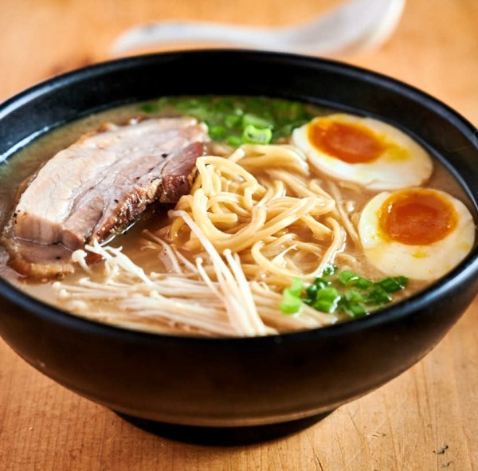

Tonkotsu Ramen

Description
Tonkotsu ramen (豚骨ラーメン) is a ramen dish that originated in Fukuoka, Japan. The soup broth is based on pork bones and other ingredients, which are typically boiled for several hours, and the dish is traditionally topped with sliced pork belly and served with ramen noodles that are hard in the center.
Ingredients
For the broth
- 3 to 4 oz pork fat
- 2 cups chicken stock
- 2 cups dashi stock
- 2 cups unsweetened soy milk
For the Bowl
- 1 portion of ramen noodles
- 3-4 tbsp tsuyu
- 1 green onion
- Handful of beansprouts
- Handful of black mushrooms
- 1-2 slices of chashu
- 1 ramen egg
- 1 clove garlic
Steps
- Place pork fat in a medium pot with enough water to cover pork. Bring it to boil over medium high then cook pork belly 5 to 7 minutes or until fully cooked. Cut pork fat into small chunks and place in a blender. Add chicken stock and blend high speed until smooth, about 1 to 2 minutes. Pour pork fat and chicken stock mixture back to now-empty-pot (rinse pot quickly then use) then add in dashi stock and soy milk. Stir and bring it to simmer over medium heat. Then, bring another pot of water to boil to cook noodles and toppings.
- Chop green onion. Slice black mushroom into long thin strips. Prepare chashu by searing on a dry pan over high heat, torch or high broil for 3 to 5 minutes.
- When water is boiling, blanch bean sprouts for 1 minute then remove from water. Drain well and set aside. Next, blanch black mushroom for 1 minutes then remove from water. Drain well and set aside. Finally, start cooking noodles. Fresh or frozen one will take only 2 minutes. Instant ramen noodles will take 3 to 4 minutes.
- While noodles are cooking, add tsuyu or chashu tare in a serving bowl. Carefully, pour 1 1/2 cup of broth we made earlier. Mix well. Drain cooked noodles well and add to bowl. Stir noodles to coat evenly with broth and arrange. Arrange toppings on top of noodles, beansprouts, black mushroom, green onions, chashu and ramen egg. Lastly, to your taste, grate in a clove of garlic. Enjoy!
Recipe is from Seonkyoung Longest found here.